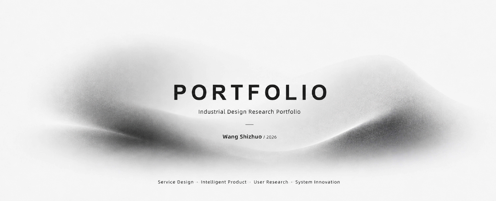
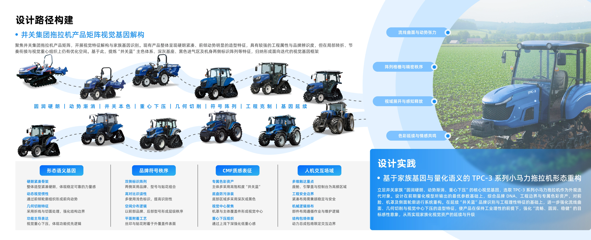
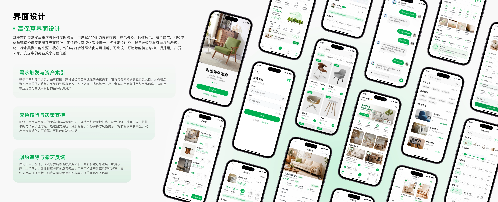
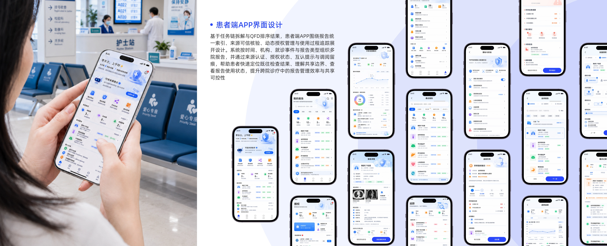

硕士专业第1




Design PhD Application Portfolio 2026
王世卓 Wang Shizhuo
量化设计方法、人机环境协同设计机制与设计参数转译
湘潭大学智能产品设计硕士，专业第1。
研究聚焦量化设计、用户需求识别与设计参数转译。
Applicant Signal
Design Research Applicant
湘潭大学十佳研究生标兵
论文发表
发明、实用新型、外观与软著
用户需求识别
场景约束建模
设计变量构建
系统评价
Applicant Profile
用量化设计方法把真实需求转译为设计参数
设计学博士
研究聚焦量化设计方法、人机环境协同机制与设计参数转译。作品集中三个项目共同呈现一条路径：先识别问题，再推导参数，最后回到场景验证方案。
湘大艺术学院
智能产品设计方向
硕士阶段进入智能产品设计方向，推免入学；本科阶段接受工业设计训练，具备产品设计与工程基础。
论文、专利与会议
围绕用户需求识别、农业机械外观评价、循环家具服务与文化体验平台形成论文、会议和知识产权成果。
复杂工业场景经验
参与锂电智能装备、工程机械等项目，熟悉从竞品分析、用户研究到概念方案和细节迭代的设计流程。
量化设计与用户研究
能够将用户研究、场景约束和评价结果转化为可讨论、可推导、可验证的设计参数。
英语基础扎实CET-4 656 / CET-6 516，可支撑英文文献阅读与学术交流
30+国家级与省级设计竞赛奖项
20+企业设计提案参与经历
01USER STUDYfield notes
DESIGN PARAMETERtranslation
Xiangtan Universitysmart product design
Academic Profile
学术训练、研究成果与博士准备
把简历中与博士申请直接相关的内容集中呈现，方便快速判断研究基础、方法训练和持续深造的准备度。
01
教育与排名
湘潭大学艺术学院智能产品设计方向硕士，推免入学，GPA 3.9/4.0，专业第1。
本科阶段为湘潭大学工业设计专业，Top 20%。
02
研究方向
关注量化设计方法、人机环境协同机制和设计参数转译，核心问题是如何把复杂场景转化为可推导的设计判断。
03
方法训练
具备用户研究、问卷设计、信效度检验、多元统计和聚类分析基础，能够完成实验设计、数据解释和方案推导。
04
博士准备
在智能装备、服务系统和医疗信息项目中持续训练问题识别、参数推导与方案验证能力，博士阶段将继续深化这一方向。
Resume Dossier
博士申请履历速览
集中呈现与博士申请直接相关的成果、经历与能力，便于快速了解我的研究基础和发展方向。
GPA 3.9/4.0
专业第1
论文 5 篇
知识产权 5 项
- Innovation of the Circular Transaction Service Mode of Furniture Products Oriented by User Demand BioResources, 2026 官方全文 Scholar
- 制造约束下的农业机械外观精益设计方法 《机械设计》, 2025
- 价值感知视域下油纸伞非遗体验平台设计研究 《包装工程》, 2025
- Research on the Appearance Evaluation Factors of Small Horsepower Tractors Based on Component Contour Extraction Advances in Mechanical Design, 已录用
- 石鼓油纸伞现代化赋能乡村振兴现状、困境及解决方案 《大众文艺》, 2023
- 授权发明专利 1 项，实用新型专利 2 项。
- 外观设计专利 1 项，软件著作权 1 项。
- 湖南省第十八届研究生创新论坛，口头报告。
- 第29届全国工业设计学术年会，墙报展示。
- 2025机械设计国际会议，口头报告。
- 湖南省第十七届研究生创新论坛，口头报告。
- 日本千叶大学 SDI-A 亚洲设计工作坊，研究东京墨田区街区服务系统。
- 长沙九十八号工业设计有限公司实习，参与智能装备与工程机械项目。
- 湘潭大学十佳研究生标兵。
- 湘潭大学一等奖学金。
- “伟人之托”奖学金。
- 国家级奖项 10 余项，省级奖项 20 余项。
- CET-4 656，CET-6 516；具备英文文献阅读和学术交流基础。
- 熟悉 Rhino、KeyShot，可完成方案推演、图表绘制与版面整合。
CVPROFILE
RESEARCHevidence
PRACTICEfield work
Research Path
围绕“人、机、环境”建立设计参数转译路径
从用户需求进入问题
先理解使用者、任务和真实情境，再提出设计问题。
把方案拆成可讨论的变量
把产品形态、界面结构和服务流程转化为可比较的设计要点。
回到场景验证设计
把场景限制纳入设计过程，检查方案是否回应问题。
Human Lens
从用户需求识别进入设计问题
从真实使用经验中提炼问题，让设计判断有依据。
理解需求
识别问题
形成判断
需求识别
从使用者、任务和场景中确认问题。
变量建模
把需求整理为可比较的设计变量。
参数转译
把研究判断转化为设计决策。
原型验证
通过方案对比检验设计结果。
HUMAN
SYSTEM
CONTEXT
Selected Projects
以三个项目呈现设计研究的不同问题类型
从外观感知进入造型判断，把评价结果落到可调整的形态参数。
从估值、信任与交付入手，梳理家具再次流通的服务流程。
围绕授权、核验与采信，组织跨院信息共享的关键节点。
Project 01 / Intelligent Equipment
井关集团小马力拖拉机外观迭代设计
项目从农业机械外观评价出发，把用户对品牌感、力量感和亲和度的判断，转化为可推敲的形态参数。
- 研究问题：小马力农业机械如何在可靠、轻便和品牌识别之间取得平衡。
- 方法路径：结合感知评价、统计分析和形态推导建立设计依据。
- 设计结果：品牌基因延续、视觉重心下压与家族化形态重构。
Project 02 / Circular Service
面向二手家具循环流通的用户端服务系统设计
项目回应闲置家具再次流通中的估值、信任和交付问题，组织用户端 APP 与线下服务协同。
- 研究问题：成色可信、信息透明、交付确定和绿色价值表达。
- 方法路径：从用户需求、优先级判断和服务流程三个层面推进。
- 设计结果：用户端 APP、OMO 循环服务架构和履约追踪机制。
Project 03 / Medical Service System
面向检查检验互认的跨院诊断报告共享系统设计
项目处理跨院报告共享中的使用阻力，把患者授权、来源核验、互认状态和使用记录组织到同一条服务链中。
- 研究问题：跨院报告共享中的授权边界、可信核验和临床采信。
- 方法路径：从多主体需求、任务链和功能转译中梳理系统逻辑。
- 设计结果：统一索引、动态授权、可信状态理解和连续追踪。
FORMvisual evaluation
SERVICEcycle flow
SYSTEMmedical sharing
High Resolution Reader
作品集阅读器
横向切换作品集页面，点击中心页全屏阅读。
Contact
联系
欢迎通过邮件或电话联系我。
博士阶段，我希望继续围绕量化设计方法、人机环境协同机制与设计参数转译开展研究。